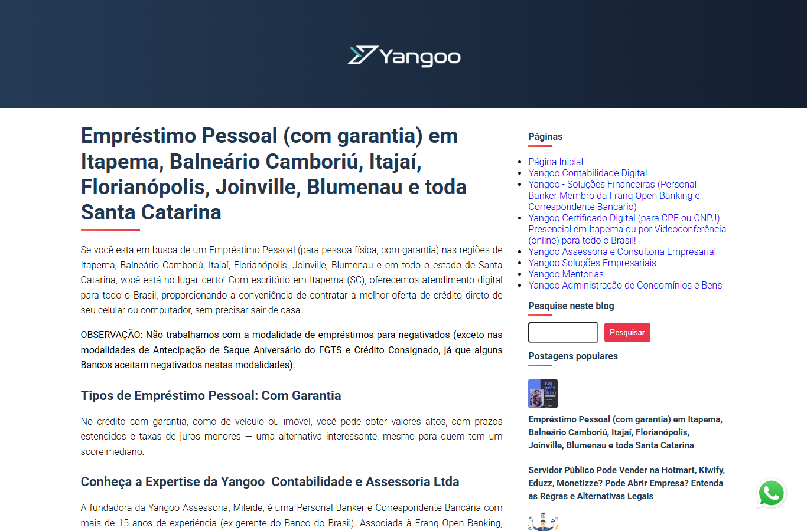
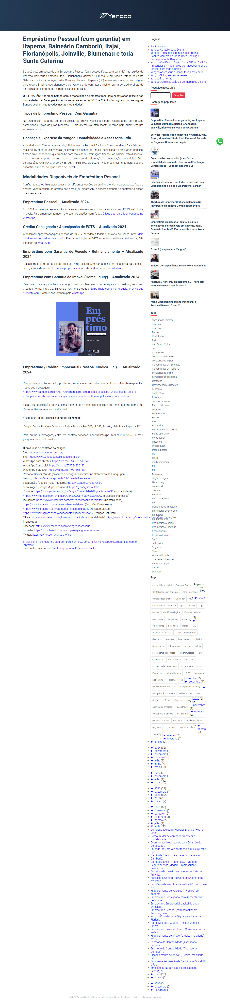

Sistema de Investigação de Marca e Identidade Online
https://www.yangoo.com.br/2021/06/emprestimo-pessoal-com-sem-garantia-itapema-balneario-camboriu-itajai-florianopolis-joinville-blumenau-todo-estado-santa-catarina.html
Prioridade: MEDIUM · Cenário: B_AMBIGUOUS_COMMUNICATION · Revisão humana: PENDING
Trata-se de página comercial da empresa 'Yangoo Contabilidade e Assessoria Ltda', que oferta intermediação de empréstimos (incluindo crédito com garantia de veículo) atuando como correspondente bancário e Personal Banker (via plataforma Franq Open Banking). Não há personificação do Banco BV nem uso de seu logotipo na página, e a menção à 'BV Financeira' ocorre em lista multimarcas ao lado de outras instituições. Contudo, como se trata de um correspondente bancário ofertando captação de propostas de crédito sem informar o número de seu CNPJ na página e sem disponibilizar os dados de ouvidoria das instituições contratantes, classifica-se como comunicação ambígua/incompleta (B_AMBIGUOUS_COMMUNICATION / REVIEW_REQUIRED, prioridade MEDIUM) para verificação de conformidade com a Resolução CMN nº 4.935/2021. [Revisor: CONFIRM] A hipótese do analista se sustenta integralmente. Trata-se de página comercial de assessoria financeira e correspondente bancário ('Yangoo Contabilidade e Assessoria Ltda' / Personal Banker associada à Franq) que promove captação de propostas de Empréstimo com Garantia de Veículo citando expressamente a 'BV Financeira' como parceira (E-TXT-008, E-DISC-001). Apesar de identificar sua condição de correspondente bancário e atuar em contexto multimarcas, a página não exibe o CNPJ da empresa correspondente nem os canais de ouvidoria das instituições financeiras representadas, justificando a manutenção de REVIEW_REQUIRED com prioridade MEDIUM para verificação de conformidade com a Resolução CMN nº 4.935/2021.


| Ref | Tipo | Local | Conteúdo |
|---|---|---|---|
| E-URL | domain | url | URL final: https://www.yangoo.com.br/2021/06/emprestimo-pessoal-com-sem-garantia-itapema-balneario-camboriu-itajai-florianopolis-joinville-blumenau-todo-estado-santa-catarina.html (domínio: www.yangoo.com.br) |
| E-DISC-001 | text | search_index | Índice de busca (grounding): yangoo.com.br — **URL:** `https://yangoo.com.br/` (e redes sociais associadas `@yangoo_oficial`) | **Segmento:** Consultoria Financeira / Correspondente Bancário | **Uso da Marca:** Divulga em vídeos, redes sociais e landing page: *"Faça seu Financiamento e Refinanciamento de Veículos no Banco BV - com Correspondente Bancário autorizado no BACEN"* (usando as hashtags `#bancobv #bvfinanceira #financiamentodeveiculo`) e captação via WhatsApp para crédito com garantia de veículo |
| E-SHOT-VIEWPORT | screenshot | viewport | evidence\C1d7748766a\attempt-1\viewport.png (sha256 49fb74a608620e2f…) |
| E-SHOT-FULL | screenshot | page | evidence\C1d7748766a\attempt-1\fullpage.png (sha256 afd70935fe50fd0c…) |
| E-TITLE | title | head | Empréstimo Pessoal (com garantia) em Itapema, Balneário Camboriú, Itajaí, Florianópolis, Joinville, Blumenau e toda Santa Catarina | Yangoo Contabilidade Digital | Itapema, Botucatu e Brasília |
| E-META-1 | meta | head | description: Contrate Sem Sair de casa: Empréstimo Pessoal em Itapema, Balneário Camboriú, Itajaí, Florianópolis, Joinville, Blumenau e toda Santa Catarina |
| E-META-2 | meta | head | og:site_name: Yangoo Contabilidade Digital |
| E-META-3 | meta | head | og:title: Yangoo Contabilidade Digital | Itapema, Botucatu e Brasília: Empréstimo Pessoal (com garantia) em Itapema, Balneário Camboriú, Itajaí, Florianópolis, Joinville, Blumenau e toda Santa Catarina |
| E-META-4 | meta | head | og:description: Contrate Sem Sair de casa: Empréstimo Pessoal em Itapema, Balneário Camboriú, Itajaí, Florianópolis, Joinville, Blumenau e toda Santa Catarina |
| E-CANONICAL | meta | head | https://www.yangoo.com.br/2021/06/emprestimo-pessoal-com-sem-garantia-itapema-balneario-camboriu-itajai-florianopolis-joinville-blumenau-todo-estado-santa-catarina.html |
| E-HEAD-1 | heading | page | Empréstimo Pessoal (com garantia) em Itapema, Balneário Camboriú, Itajaí, Florianópolis, Joinville, Blumenau e toda Santa Catarina |
| E-HEAD-2 | heading | page | Tipos de Empréstimo Pessoal: Com Garantia |
| E-HEAD-3 | heading | page | Conheça a Expertise da Yangoo Contabilidade e Assessoria Ltda |
| E-HEAD-4 | heading | page | Modalidades Disponíveis de Empréstimo Pessoal |
| E-HEAD-5 | heading | page | Empréstimo Pessoal – Atualizado 2024 |
| E-HEAD-6 | heading | page | Crédito Consignado / Antecipação de FGTS – Atualizado 2024 |
| E-HEAD-7 | heading | page | Empréstimo com Garantia de Veículo / Refinanciamento – Atualizado 2024 |
| E-HEAD-8 | heading | page | Empréstimo com Garantia de Imóvel (Home Equity) – Atualizado 2024 |
| E-HEAD-9 | heading | page | Empréstimo / Crédito Empresarial (Pessoa Jurídica - PJ) - - Atualizado 2024 |
| E-HEAD-10 | heading | page | Páginas |
| E-HEAD-11 | heading | page | Pesquise neste blog |
| E-HEAD-12 | heading | page | Postagens populares |
| E-HEAD-13 | heading | page | Tags |
| E-HEAD-14 | heading | page | Tags |
| E-HEAD-15 | heading | page | Arquivos do blog |
| E-FOLD | text | viewport (acima da dobra) | Yangoo Contabilidade Digital Empréstimo Pessoal (com garantia) em Itapema, Balneário Camboriú, Itajaí, Florianópolis, Joinville, Blumenau e toda Santa Catarina Se você está em busca de um Empréstimo Pessoal (para pessoa física, com garantia) nas regiões de Itapema, Balneário Camboriú, Itajaí, Florianópolis, Joinville, Blumenau e em todo o estado de Santa Catarina, você está no lugar certo! Com escritório em Itapema (SC), oferecemos atendimento digital para todo o Brasil, proporcionando a conveniência de contratar a melhor oferta de crédito direto de seu celular ou computador, sem precisar sair de casa. OBSERVAÇÃO: Não trabalhamos com a modalidade de empréstimos para negativados (exceto nas modalidades de Antecipação de Saque Aniversário do FGTS e Crédito Consignado, já que alguns Bancos aceitam negativados nestas modalidades). Tipos de Empréstimo Pessoal: Com Garantia No crédito com garantia, como de veículo ou imóvel, você pode obter valores altos, com prazos estendidos e taxas de juros menores — uma alternativa interessante, mesmo para quem tem um score mediano. Conheça a Expertise da Yangoo Contabilidade e Assessoria Ltda A fundadora da Yangoo Assessoria, Mileide, é uma Personal Banker e Correspondente Bancária com mais de 15 anos de experiência (ex-gerente do Banco do Brasil). Associada à Franq Open Banking, fintech em Florianópolis que trabalha com mais de 30 instituições financeiras, Mileide está disponível para oferecer suporte durante todo o processo de simulação e contratação de crédito. Com certificações ANBIMA CPA-20 e FEBRABAN FBB-100, ela traz um vasto conhecimento para ajudar a encontrar a melhor solução para o seu perfil. Páginas Página Inicial Yangoo Contabilidade Digital Yangoo - Soluções Financeiras (Personal Banker Membro da Franq Open Banking e Correspondente Bancário) Yangoo Certificado Digital (para CPF ou CNPJ) - Presencial em Itapema ou por Videoconferência (online) para todo o Brasil! Yangoo Assessoria e Consultoria Empresarial Yangoo Soluçõ |
| E-FTR | text | footer | © 2026 Yangoo Contabilidade Digital | Itapema, Botucatu e Brasília. Todos os direitos reservados. |
| E-CTA-1 | cta | page | Enviar por e-mail <https://www.blogger.com/share-post/5214541543224128965/5992618525313880421?https=true&target=email> |
| E-CTA-2 | cta | page | Postar no blog! <https://www.blogger.com/share-post/5214541543224128965/5992618525313880421?https=true&target=blog> |
| E-CTA-3 | cta | page | Compartilhar no X <https://www.blogger.com/share-post/5214541543224128965/5992618525313880421?https=true&target=twitter> |
| E-CTA-4 | cta | page | Compartilhar no Facebook <https://www.blogger.com/share-post/5214541543224128965/5992618525313880421?https=true&target=facebook> |
| E-CTA-5 | cta | page | Compartilhar com o Pinterest <https://www.blogger.com/share-post/5214541543224128965/5992618525313880421?https=true&target=pinterest> |
| E-CTA-6 | cta | page | Pesquisar |
| E-CONTACT-1 | contact | page | Clique aqui para falar conosco no WhatsApp <https://wa.me/5547992335806> |
| E-CONTACT-2 | contact | page | WhatsApp <https://wa.me/5547992335806> |
| E-CONTACT-3 | contact | page | WhatsApp <https://wa.me/5547992335806> |
| E-CONTACT-4 | contact | page | WhatsApp <https://wa.me/5547992335806> |
| E-CONTACT-5 | contact | page | https://wa.me/5547996513240 <https://wa.me/5547996513240> |
| E-CONTACT-6 | contact | page | https://wa.me/554734300123 <https://wa.me/554734300123> |
| E-CONTACT-7 | contact | page | https://wa.me/5514997163118 <https://wa.me/5514997163118> |
| E-CONTACT-8 | contact | page | https://www.instagram.com/yangoocontabilidadedigital/ <https://www.instagram.com/yangoocontabilidadedigital/> |
| E-CONTACT-9 | contact | page | https://www.instagram.com/personalbankerdafranq <https://www.instagram.com/personalbankerdafranq> |
| E-CONTACT-10 | contact | page | https://www.instagram.com/yangoocertificadodigital/ <https://www.instagram.com/yangoocertificadodigital/> |
| E-CONTACT-11 | contact | page | https://www.instagram.com/yangoocontabilidadebotucatu <https://www.instagram.com/yangoocontabilidadebotucatu> |
| E-CONTACT-12 | contact | page | https://www.facebook.com/yangooassessoria <https://www.facebook.com/yangooassessoria> |
| E-CONTACT-13 | contact | page | Falar com a Yangoo pelo WhatsApp <https://wa.me/554734300123> |
| E-TXT-001 | text | page | Se você está em busca de um Empréstimo Pessoal (para pessoa física, com garantia) nas regiões de Itapema, Balneário Camboriú, Itajaí, Florianópolis, Joinville, Blumenau e em todo o estado de Santa Catarina, você está no lugar certo! Com escritório em Itapema (SC), oferecemos atendimento digital para todo o Brasil, proporcionando a conveniência de contratar a melhor oferta de crédito direto de seu |
| E-TXT-002 | text | page | OBSERVAÇÃO: Não trabalhamos com a modalidade de empréstimos para negativados (exceto nas modalidades de Antecipação de Saque Aniversário do FGTS e Crédito Consignado, já que alguns Bancos aceitam negativados nestas modalidades). |
| E-TXT-003 | text | page | Conheça a Expertise da Yangoo Contabilidade e Assessoria Ltda |
| E-TXT-004 | text | page | A fundadora da Yangoo Assessoria, Mileide, é uma Personal Banker e Correspondente Bancária com mais de 15 anos de experiência (ex-gerente do Banco do Brasil). Associada à Franq Open Banking, fintech em Florianópolis que trabalha com mais de 30 instituições financeiras, Mileide está disponível para oferecer suporte durante todo o processo de simulação e contratação de crédito. Com certificações |
| E-TXT-005 | text | page | Confira abaixo os links para acessar as diferentes opções de crédito e enviar sua proposta. Após a análise, você receberá as ofertas por e-mail (ou WhatsApp) e poderá comparar e contratar a opção mais vantajosa. |
| E-TXT-006 | text | page | Em 2024, nossos parceiros estão focados em empréstimos com garantias, como FGTS, veículos e imóveis. Para empresas, também oferecemos opções com fiador. Clique aqui para falar conosco no WhatsApp. |
| E-TXT-007 | text | page | Atendemos aposentados/pensionistas do INSS e servidores federais, através do Banco Inter. Mais detalhes sobre crédito consignado. Para antecipação do FGTS ou outros créditos consignados, fale conosco no WhatsApp. |
| E-TXT-008 | text | page | Trabalhamos com os parceiros Creditas, Porto Seguro, Sim Santander e BV Financeira para crédito com garantia de veículo. Envie sua proposta aqui ou fale direto conosco no WhatsApp. |
| E-TXT-009 | text | page | Para quem busca juros baixos e longos prazos, oferecemos home equity com instituições como Creditas, Wimo, Inter, C6, Santander, UCI, entre outras. Saiba mais sobre home equity e envie sua proposta aqui. Contate-nos também pelo WhatsApp. |
| E-TXT-010 | text | page | Yangoo Contabilidade e Assessoria Ltda - Sede na Rua 300, nº 187, Sala 04, Meia Praia, Itapema SC. |
| E-TXT-011 | text | page | Para outras informações, entre em contato conosco. Fone/WhatsApp: (47) 99233 5806 - E-mail: yangooassessoria@gmail.com |
| E-TXT-012 | text | page | WhatsApp para clientes: https://wa.me/5547996513240 |
| E-TXT-013 | text | page | WhatsApp Comercial: https://wa.me/554734300123 |
| E-TXT-014 | text | page | WhatsApp Botucatu: https://wa.me/5514997163118 |
| E-TXT-015 | text | page | Twitter: https://twitter.com/yangoo_oficial |
| E-TXT-016 | text | page | Yangoo - Soluções Financeiras (Personal Banker Membro da Franq Open Banking e Correspondente Bancário) |
| E-TXT-017 | text | page | Yangoo Certificado Digital (para CPF ou CNPJ) - Presencial em Itapema ou por Videoconferência (online) para todo o Brasil! |
| E-TXT-018 | text | page | Yangoo Correspondente Bancário em Itapema SC |
| E-TXT-019 | text | page | Banco |
| E-TXT-020 | text | page | cnpj |
| E-TXT-021 | text | page | Correspondente Bancário |
| E-TXT-022 | text | page | cnpj |
| E-TXT-023 | text | page | Banco |
| E-TXT-024 | text | page | Correspondente Bancário |
| Dimensão | Sinal | Achado | Refs |
|---|---|---|---|
| VISUAL_IDENTITY | LEGITIMATE | A identidade visual da página é própria da empresa 'Yangoo Contabilidade Digital', utilizando cores e logotipo próprios, sem imitar o layout ou a identidade visual do Banco BV. | E-SHOT-VIEWPORT E-SHOT-FULL |
| DECLARED_COMMERCIAL_IDENTITY | CONFUSION | A página identifica a razão social 'Yangoo Contabilidade e Assessoria Ltda' e endereço físico em Itapema/SC, porém omite o número do CNPJ do estabelecimento na página de oferta de crédito. | E-HEAD-3 E-TXT-010 E-FTR |
| CORRESPONDENT_TRANSPARENCY | CONFUSION | Há declaração expressa de atuação como 'Correspondente Bancário' e membro da plataforma 'Franq Open Banking' logo acima da dobra, mas faltam o CNPJ da empresa correspondente e os telefones da ouvidoria das instituições parceiras. | E-FOLD E-TXT-004 E-TXT-016 |
| INSTITUTIONAL_LANGUAGE | LEGITIMATE | A comunicação é feita claramente em nome da assessoria (Yangoo / Personal Banker), citando a BV Financeira apenas como uma das instituições parceiras em contexto multimarcas ('Creditas, Porto Seguro, Sim Santander e BV Financeira'). | E-TXT-004 E-TXT-008 |
| LOGO_USAGE | LEGITIMATE | Não há uso do logotipo do Banco BV ou da BV Financeira na página inspecionada. | E-SHOT-VIEWPORT E-SHOT-FULL |
| SERVICE_JOURNEY | NEUTRAL | A página direciona o usuário para envio de propostas de crédito via links externos (plataforma Franq) ou atendimento via WhatsApp. | E-TXT-005 E-TXT-008 E-SHOT-FULL |
| CONTACT_CHANNELS | LEGITIMATE | Os canais de contato divulgados (números de WhatsApp, e-mail e redes sociais) estão claramente identificados como pertencentes à Yangoo Contabilidade e Assessoria. | E-CONTACT-1 E-TXT-011 E-TXT-012 E-TXT-013 |
| CONSUMER_CONFUSION | LEGITIMATE | O risco de o consumidor acreditar que está em um canal oficial do Banco BV é baixo, visto que a página destaca a marca própria (Yangoo) e lista múltiplos bancos concorrentes. | E-TITLE E-FOLD E-TXT-008 |
Trata-se de página comercial da empresa 'Yangoo Contabilidade e Assessoria Ltda', que oferta intermediação de empréstimos (incluindo crédito com garantia de veículo) atuando como correspondente bancário e Personal Banker (via plataforma Franq Open Banking). Não há personificação do Banco BV nem uso de seu logotipo na página, e a menção à 'BV Financeira' ocorre em lista multimarcas ao lado de outras instituições. Contudo, como se trata de um correspondente bancário ofertando captação de propostas de crédito sem informar o número de seu CNPJ na página e sem disponibilizar os dados de ouvidoria das instituições contratantes, classifica-se como comunicação ambígua/incompleta (B_AMBIGUOUS_COMMUNICATION / REVIEW_REQUIRED, prioridade MEDIUM) para verificação de conformidade com a Resolução CMN nº 4.935/2021.
A página declara atuação como correspondente/prestador e identifica a empresa, mas não houve confirmação em cadastro autorizado.
| Tipo | Valor | Ref | Contexto |
|---|---|---|---|
| domain | yangoo.com.br | E-URL | |
| legal_name | Expertise da Yangoo Contabilidade e Assessoria Ltda | E-HEAD-3 | |
| social_profile | https://www.instagram.com/yangoocontabilidadedigital/ | E-CONTACT-8 | |
| social_profile | https://www.instagram.com/personalbankerdafranq | E-CONTACT-9 | |
| social_profile | https://www.instagram.com/yangoocertificadodigital/ | E-CONTACT-10 | |
| social_profile | https://www.instagram.com/yangoocontabilidadebotucatu | E-CONTACT-11 | |
| social_profile | https://www.facebook.com/yangooassessoria | E-CONTACT-12 | |
| legal_name | Yangoo Contabilidade e Assessoria Ltda | E-TXT-010 | |
| yangooassessoria@gmail.com | E-TXT-011 | ||
| trade_name | Yangoo Contabilidade Digital | E-META-2 | |
| phone | (47) 99233 5806 | E-TXT-011 | |
| Índice de busca (grounding): yangoo.com.br — **URL:** `https://yangoo.com.br/` (e redes sociais associadas `@yangoo_oficial`) | **Segmento:** Consultoria Financeira / Correspondente Bancário | **Uso d | E-DISC-001 | ||
| Clique aqui para falar conosco no WhatsApp <https://wa.me/5547992335806> | E-CONTACT-1 | ||
| WhatsApp <https://wa.me/5547992335806> | E-CONTACT-2 | ||
| correspondent_declaration | Correspondente Bancário | E-FOLD | Yangoo Contabilidade Digital Empréstimo Pessoal (com garantia) em Itapema, Balneário Camboriú, Itajaí, Florianópolis, Joinville, Blumenau e toda Santa Catarina Se você está em busca de um Empréstimo P |
| partnership_declaration | autorizado | E-DISC-001 | com Correspondente Bancário autorizado no BACEN"* (usando as hashtags `#bancobv #bvfinanceira #financiamentodeveiculo`) e captação via WhatsApp para crédito com garantia de veículo |
| partnership_declaration | parceiros | E-TXT-008 | Trabalhamos com os parceiros Creditas, Porto Seguro, Sim Santander e BV Financeira para crédito com garantia de veículo. |
Mapeamento indicativo para apoio à auditoria. Não constitui conclusão regulatória; a decisão definitiva pertence à auditoria.
Fonte: NORMATIVE
Art. 14. O contrato de correspondente deve estabelecer: [...] II - vedação à utilização, pelo contratado, de logomarca ou de outros atributos que sejam similares aos adotados pela instituição contratante em suas agências, postos de atendimento, sítio eletrônico na internet, aplicativo ou outras plataformas de comunicação em rede;
Evidência observada: E-SHOT-FULL E-SHOT-VIEWPORT
Fonte: NORMATIVE
Art. 14. O contrato de correspondente deve estabelecer: [...] III - divulgação ao público, pelo contratado, de sua condição de prestador de serviços à instituição contratante, identificada pelo nome com que é conhecida no mercado, com descrição dos produtos e serviços oferecidos e canais de contato da instituição contratante, inclusive de sua ouvidoria, em local visível, em destaque e em formato legível, por meio de: a) sítio eletrônico do correspondente na internet, acessível na página inicial; b) aplicativo e outras plataformas de comunicação em rede do correspondente; [...]
Hipótese: Há declaração da condição de correspondente/prestador, mas outros elementos da página (DECLARED_COMMERCIAL_IDENTITY) podem contradizê-la ou reduzir seu efeito (destaque, legibilidade e identificação da contratante a verificar). Aplicável somente se confirmado o vínculo de correspondente.
Evidência observada: E-FOLD E-FTR E-HEAD-3 E-TXT-004 E-TXT-008 E-TXT-010 E-TXT-016
Informação faltante:
Fonte: NORMATIVE
Art. 3º O correspondente atua por conta e sob as diretrizes da instituição contratante, que assume inteira responsabilidade pelo atendimento prestado aos clientes e usuários por meio do contratado.
Evidência observada: E-CONTACT-1 E-TXT-011 E-TXT-012 E-TXT-013
Limitações: requisitos contratuais/internos não fornecidos: mapeamento limitado ao texto normativo
Decisão: CONFIRM → REVIEW_REQUIRED / MEDIUM
A hipótese do analista se sustenta integralmente. Trata-se de página comercial de assessoria financeira e correspondente bancário ('Yangoo Contabilidade e Assessoria Ltda' / Personal Banker associada à Franq) que promove captação de propostas de Empréstimo com Garantia de Veículo citando expressamente a 'BV Financeira' como parceira (E-TXT-008, E-DISC-001). Apesar de identificar sua condição de correspondente bancário e atuar em contexto multimarcas, a página não exibe o CNPJ da empresa correspondente nem os canais de ouvidoria das instituições financeiras representadas, justificando a manutenção de REVIEW_REQUIRED com prioridade MEDIUM para verificação de conformidade com a Resolução CMN nº 4.935/2021.
| Tema | Severidade | Questionamento | Refs |
|---|---|---|---|
| Transparência regulatória de Correspondente Bancário | MEDIUM | A empresa declara atuação como Correspondente Bancário e oferta crédito com garantia de veículo mencionando a BV Financeira, realizando captação via WhatsApp e links externos, porém omite seu número de CNPJ e os telefones de atendimento/ouvidoria da instituição financeira contratante na página. | E-FOLD E-TXT-008 E-TXT-010 E-FTR E-SHOT-FULL |
| contradictory_evidence | LOW | Coexistem declaração de correspondente e indícios de confusão. | E-FOLD E-TXT-016 E-TXT-018 |
| Fonte | Consulta / hipótese | URL original | Título / trecho |
|---|---|---|---|
| grounding | Objetivo: Perfis e publicações no Instagram usando a marca ('Parceiro BV', 'Correspondente', 'Agência BV', 'Feirão Banco BV').
Execute no Google Search as seguintes consultas (dorks):
- site:instagram.com ("Banco BV" OR "bv financeira") (financiamento OR veículos OR correspondente) -inurl:/bancobv/ -inurl:/napistabr/ -inurl:/popular/ -site:bv.com.br -site:bancobv.com.br -site:bvfinanceira.com.br -site:bvinvestimentos.com.br -site:napista.com.br -site:bvopen.com.br -site:meufinanciamentosolar.com.br -site:votorantim.com.br -site:vam.com.br
- site:instagram.com ("Feirão Banco BV" OR "Feirão BV" OR "Parceiro BV" OR "Agência BV") (veículos OR multimarcas OR financiamento) -inurl:/bancobv/ -inurl:/popular/ -site:bv.com.br -site:bancobv.com.br -site:bvfinanceira.com.br -site:bvinvestimentos.com.br -site:napista.com.br -site:bvopen.com.br -site:meufinanciamentosolar.com.br -site:votorantim.com.br -site:vam.com.br
Liste de forma abrangente as páginas públicas encontradas (até 12 resultados distintos), informando para cada uma o nome do estabelecimento/perfil, a URL e como a marca é utilizada (destaque visual, título, feirão, simulador, redes sociais e se há ou não identificação clara de CNPJ e condição de correspondente bancário). H6-platform:Instagram | https://www.yangoo.com.br/2021/06/emprestimo-pessoal-com-sem-garantia-itapema-balneario-camboriu-itajai-florianopolis-joinville-blumenau-todo-estado-santa-catarina.html | yangoo.com.br **URL:** `https://yangoo.com.br/` (e redes sociais associadas `@yangoo_oficial`) | **Segmento:** Consultoria Financeira / Correspondente Bancário | **Uso da Marca:** Divulga em vídeos, redes sociais e landing page: *"Faça seu Financiamento e Refinanciamento de Veículos no Banco BV - com Correspondente Bancário autorizado no BACEN"* (usando as hashtags `#bancobv #bvfinanceira #financiamentodeveiculo`) e captação via WhatsApp para crédito com garantia de veículo |
Original: https://www.yangoo.com.br/2021/06/emprestimo-pessoal-com-sem-garantia-itapema-balneario-camboriu-itajai-florianopolis-joinville-blumenau-todo-estado-santa-catarina.html
Final: https://www.yangoo.com.br/2021/06/emprestimo-pessoal-com-sem-garantia-itapema-balneario-camboriu-itajai-florianopolis-joinville-blumenau-todo-estado-santa-catarina.html
| Artefato | Caminho | SHA-256 | Bytes |
|---|---|---|---|
| screenshot_viewport | evidence\C1d7748766a\attempt-1\viewport.png | 49fb74a608620e2fcb412f19e413e5579485e068ab49b457407d8ee8965344c2 | 248972 |
| screenshot_full | evidence\C1d7748766a\attempt-1\fullpage.png | afd70935fe50fd0caf7c5831a17fc6b8e882830f555864d1226a014c45d6ddbb | 1084810 |
| html | evidence\C1d7748766a\attempt-1\page.html.txt | 0771665c65d7700282ecd38c4519e99d33086c6d1fe2be16d5911741a5a569d2 | 217865 |
| text | evidence\C1d7748766a\attempt-1\text.txt | cdbd4cd19bdd4c61fefbeed8b58172eac5db299e6dcfc17a4f4e3faa5f679b40 | 10609 |
| page_data | evidence\C1d7748766a\attempt-1\page.json | afce58e4667dc40237c22cda9d9e2309fd133713d5def97be5a08ed21b2de779 | 69694 |
| Quando | De | Para | Nota |
|---|---|---|---|
| 2026-11-23T14:17:57+00:00 | DISCOVERED | QUEUED | prioritised (score 3.5) |
| 2026-11-23T14:21:21+00:00 | QUEUED | COLLECTING | |
| 2026-11-23T14:22:04+00:00 | COLLECTING | COLLECTED | |
| 2026-11-23T14:22:04+00:00 | COLLECTED | ANALYZING | |
| 2026-11-23T14:22:36+00:00 | ANALYZING | REVIEWING | |
| 2026-11-23T14:22:51+00:00 | REVIEWING | COMPLETED |